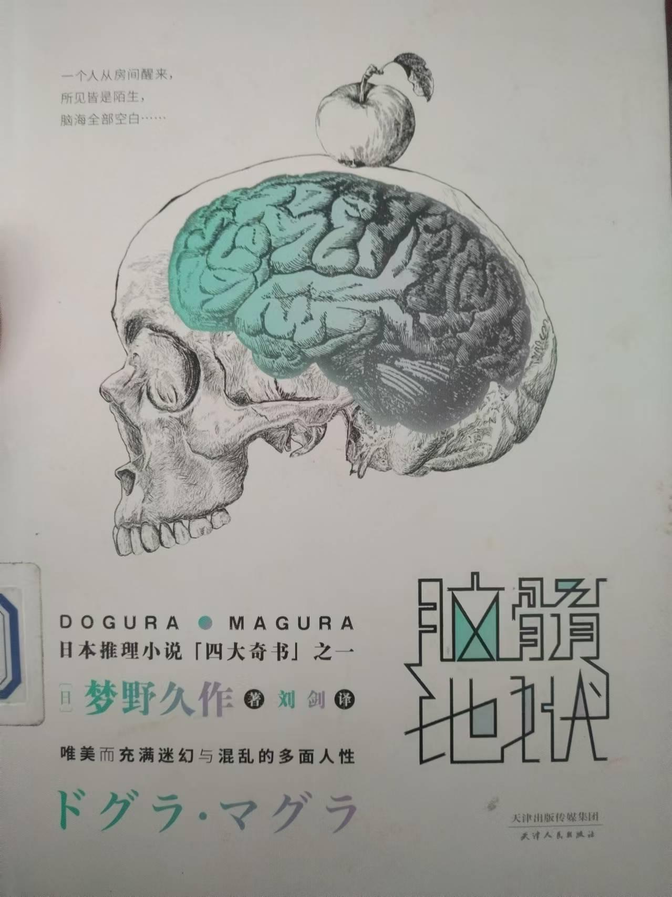
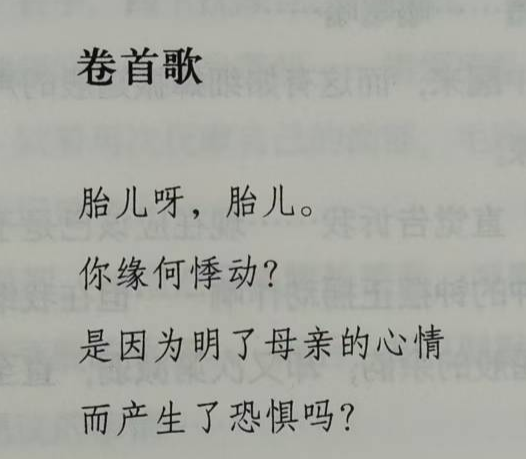
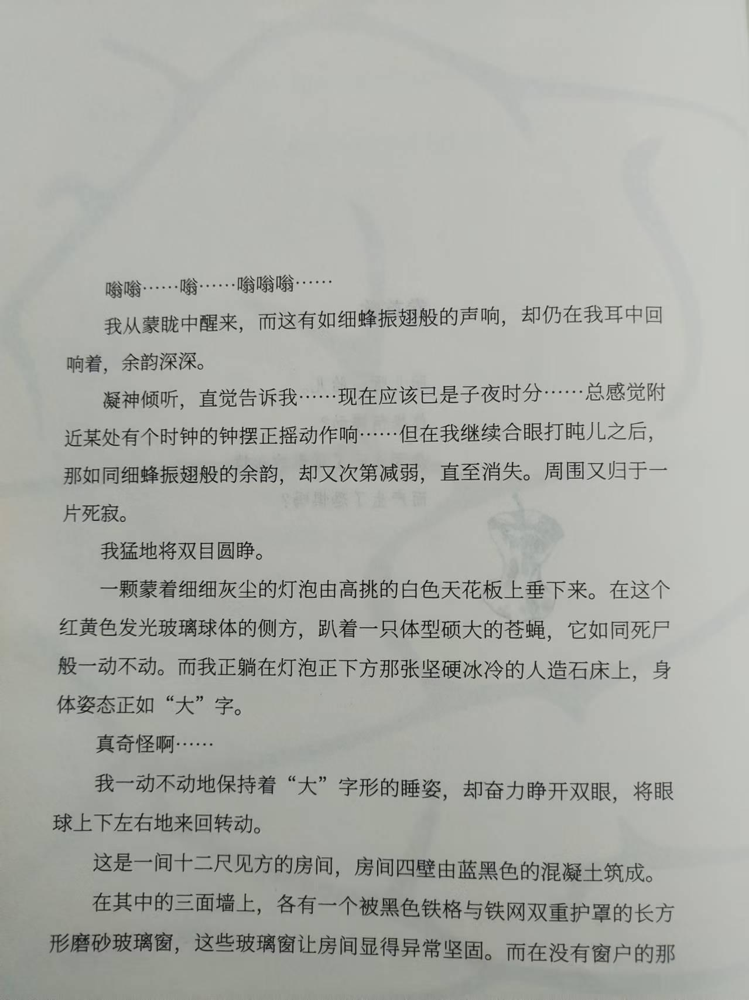
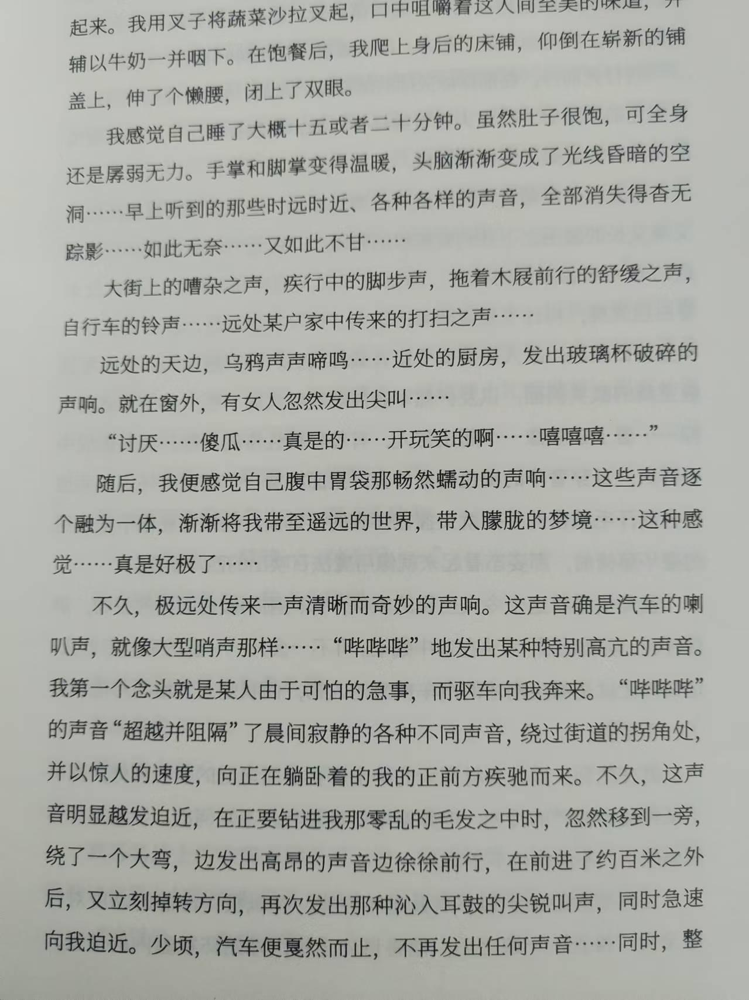
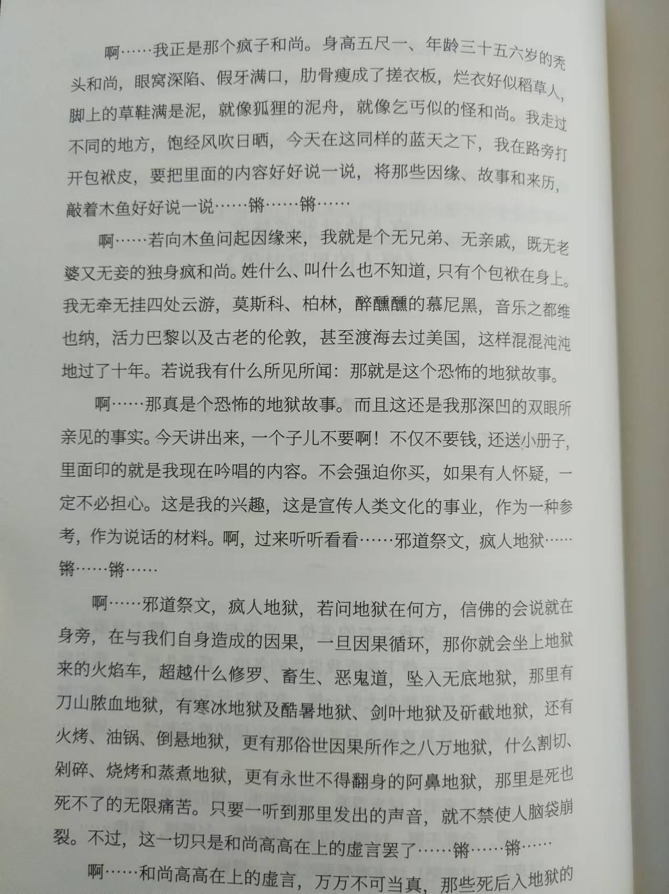
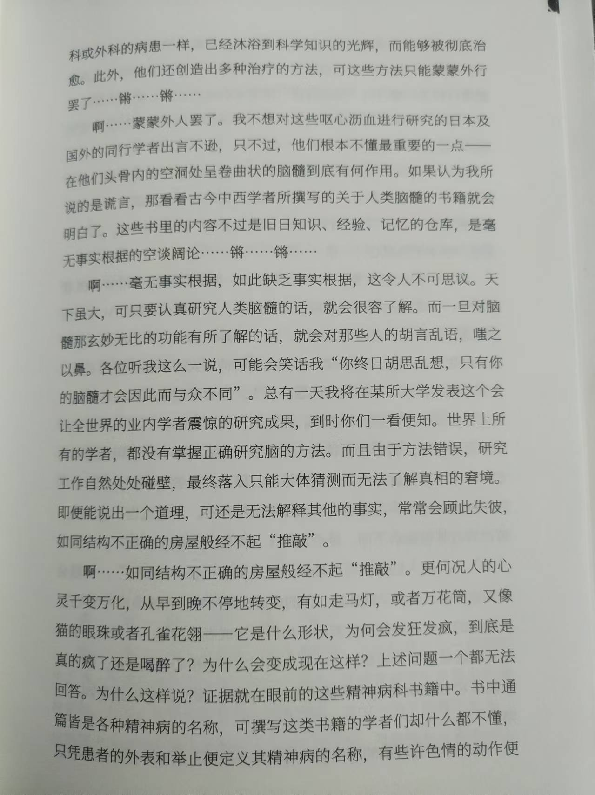
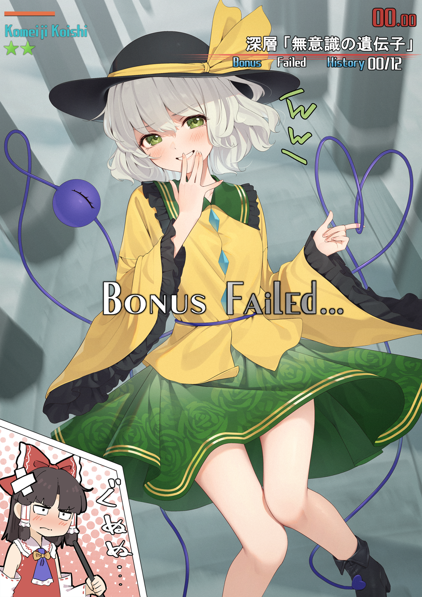

参见知乎问题：https://www.zhihu.com/question/301331615/answer/3391140761
前言
本人仅搜寻到日文原文、詹慕如译本和林敏生译本。一开始我读的是林敏生译本，但后来阅读越觉得累，再一比读詹慕如译本，惊呼“不对劲不对劲”，然后赶紧找了找日文原文（书名叫《ドグラ・マグラ》），现抽取几个段落在此比对，以供后来者参考（尤其是对于非纸质版的读者而言）。
关于孟洁译本，可以参考这篇文章：【剧透】脑髓地狱电影和小说有什么区别
如果 纸质书籍 的情况与我下文列举出来的不同，或者我所列出来的地方有错误疏漏，烦请多多指教。
2024.12.15 更新：在学校图书馆找到刘剑老师翻译的版本，大体上感觉和林敏生译本更为接近。直接上照片，侵删。

卷头歌
首先看卷头歌，知乎答主 @两朵云 的回答非常专业，很有参考价值，我个人也非常支持他的绝大多数观点，就不多说什么了。请略微注意分行和标点。
【原文】
胎児よ
胎児よ
何故躍る
母親の心がわかって
おそろしいのか
【詹慕如译本】
胎儿呀，胎儿。
你为何跳动
是因为了解母亲的心
而，害怕吗
【林敏生译本】
胎儿啊
胎儿啊
你为何跳动？
因为看透了母亲的心
才感到恐惧吗？
【刘剑译本】

开头
再来看看开头，从这开始我就已经觉得不对劲了。
【原文】
…………ブウウ──────ンンン──────ンンンン………………。
私がウスウスと眼を覚ました時、こうした蜜みつ蜂ばちの唸うなるような音は、まだ、その弾力の深い余韻を、私の耳の穴の中にハッキリと引き残していた。
【詹慕如译本】
……嗡呜——呜呜——呜呜……
从蒙眬中睁开眼时，这有如蜜蜂振翅的声音，以及那充满弹力的深刻残响，仍清楚残留在我耳里。
【林敏生译本】
……嗡嗡——嗡——嗡嗡嗡……
我朦胧中苏醒，这种有如蜜蜂振翅的声音，仍在我耳里留下极深的振动余韵。
林敏生译本这里“我朦胧中”少个“从”字，后面也有大量句子存在相似的问题，我个人觉得大概率是上传的问题，而不是原译本的问题。这一点希望能有阅读过纸质书的同志证实一下，后面就不再谈及这一问题了。
最后一两个短句，我个人更倾向于詹慕如译本。在不懂日语的情况下直球看原文，感觉上詹慕如译本更像是直译，说难听点就是感觉林敏生译本漏译了。
段落 3
【原文】
青黒いコンクリートの壁で囲まれた二間四方ばかりの部屋である。
【詹慕如译本】
这房间由蓝黑色水泥墙包围，大小约莫 两间(1) 见方。
【林敏生译本】
这是一个由蓝黑色混凝土墙围绕的 十二尺 见方左右的房间。
【刘剑译本】

林敏生译本的“十二尺”着实让我摸不着头脑，虽然詹慕如译本原封不动将数字和单位保留下来，同样也不能直观地了解尺寸到底有多大，但是人家有注释……而且保留原文也多了点日本味道呢。这里所体现出的翻译倾向性在后面也一直有所体现，比如下面这一段。
段落 4
【原文】太长了就只放一部分，也即译本中加粗的部分。
……それは たしかに 自動車の警笛サイレンで……
……何だか恐ろしく急な用事があって、私のところへ馳かけ付けて来るように思えてしようがなかった。
……間もなくピッタリと停車したらしい。何の物音も聞こえなくなった。
【詹慕如译本】
慢慢地，只剩下一个特别清楚的奇妙声音，从非常远的地方传来。那 应该是 汽车的喇叭声，就好像大型哨子一样……哔……哔……哔哔哔哔……一种响得特别高亢的声音，我 忍不住觉得 它好像有什么慌张紧急的事，直冲着我开过来。哔哔哔哔的声响超越，又吓阻了营造这宁静清晨的各种声音，在街道的各个角落一会儿弯向这、一会儿转向那，以极其惊人的速度开往我躺着的头部方向，一点一点逼近我，就在它即将钻进我一头蓬乱发丝内之前，忽然往旁一偏，绕了个大弯。它发出高亢的鸣声缓慢徐行，大约走了 一町(2) 远，又换了方向，这次发出了几乎要钻进我耳里的尖锐惨叫，急速逼近，然后瞬间戛然停止。什么声音都听不见了。……同时，整个世界一片寂静，我则陷入深沉浓密的睡眠中……
【林敏生译本】
……不久，遥远的地方开始传来一个清楚的奇妙声音，那 确实是 汽车的喇叭声，恰似大型哨声……哔、哔…哔……哔、哔、哔、哔的，一种特别高亢的声音，我 不得不认为那表示 有可怕紧急的事情，冲着我来。哔、哔、哔、哔声超越且吓阻了清晨静寂的各种声音，绕向街道处的转角，以惊人的速度，赶往躺着的我头部的方向。顷刻，声音更加迫近，似乎即将钻人我杂乱头发之前，忽然移向一旁，绕了个大弯，发出极高的吼叫声，徐行约莫 一百公尺 远，又立刻转变方向，持续发出几乎渗入我耳洞的尖锐声，急速逼近，这才戛然停止，再也听不见任何声音。……同时，整个世界一片寂然，我陷入深沉不醒人事的睡眠中。
这一段所体现出的文风极其清晰，大家仁者见仁，智者见智。不过，那个“应该”和“确实”肯定有一个有问题。
【刘剑译本】

段落 5
【原文】
…… と申しますのはかような次第でございます。 元来この斎藤先生と申しますのは、この大学の創立当初から勤続しておられたお方で
【詹慕如译本】
这件事的原委是这样的。 这位斋藤教授从本大学创设之初，就已经在此任教……
【林敏生译本】
这当中的原因如下，亦即， 斋藤教授自本大学创设之初就己任职于此……
在我读林敏生译本读到这里时，我意识到这个译本似乎不适合我……我回想起第一次学递归时，仓促做题却发现不会做，看了别人的代码时，第一眼便感受到莫大的迷惑与痛苦。林敏生译本的这句话给我的感受也是这样的。
疯人地狱邪道祭文
【原文】同样只放一部分
……足に引きずる草ぞう履りと見たれば。泥で固めたカチカチ山だよ。まるで狸たぬきの泥舟まがいじゃ。 乞こ食じきまがいのケッタイ坊主が。流れ渡って来た国々の。風に晒さらされ天日に焼かれて。きょうもおんなじ青天井だよ。道のほとりに鞄かばんを拡げて。スカラカ、チャカポコ外聞晒す。 曰いわく因いん縁ねん、故事、来歴をば。たたく木魚に尋ねてみたら……スカラカ、チャカポコ。チャカポコ、チャカポコ……。
あ──ア。曰く因縁、 木魚に聞いたら。親子兄弟、親類眷けん属ぞく、嬶かかあも妾めかけももちろん持たない。……阿呆つくした十年がかりじゃ。見たり聞いたりして来た中でも。タッタ一つの土産みやげというのが。ナント恐ろし地獄の話じゃ……スカラカ、ポクポク。チャチャラカ、ポクポク……。
あ──ア。さても恐ろし地獄の話じゃ。しかも私の凹へこんだこの眼で、チャンと見て来た事実の話じゃ。
【詹慕如译本】
啊——啊——。在下是个疯和尚，身高五尺有一寸，今年三十又五六。和尚我一头光光、满口假牙眼窝凹，干瘦肋骨能当洗衣板。这身袄子是田里稻草人的，脚上踏的草鞋，好比泥巴凝成的喀漆喀漆山，简直像狸搭的那艘泥船(16)。 我这乞丐般的怪和尚，一路饱经各国风吹日晒，今天同样以天为盖，随地就在路旁打开包袱。咚哒锵哒、哐得隆咚，顾不得体面。 若要问我因缘故事来历，不如问这木鱼吧……咚哒锵哒、哐得隆咚。锵啷隆咚、哐得隆咚……
啊——啊。说到因缘， 不妨问问这木鱼吧。休说亲子兄弟、亲戚家眷，妻妾当然也没有……十年来我蠢事干尽，所见所闻中，唯一能带回的伴手礼，却是个恐怖惊人的地狱故事……咚哒空哒、砰空砰空。锵啷隆咚、砰空砰空……
啊——啊。这可是吓人的地狱故事啊。而且都是我这对凹陷双眼亲睹的事实。……
【林敏生译本】
啊——我是今天第一次出现的疯子和尚，身高五尺一寸，三十五、六岁的光头和尚。眼窝凹陷、满口假牙，瘦削的胸膛如同洗衣板，身穿的衣服似田地里的稻草人，脚上的鞋子满是泥泞、简直就像狐狸的泥舟，是个穿着打扮完全如同乞丐的丑陋和尚。饱经异国的风吹日晒，今天同样站在空旷的蓝天下，在路旁打开手上的包裹，向各位诉说因缘、故事、来历，敲打着木鱼，铿、铿、铿、铿……
啊——这是恐怖的地狱故事，而且是我凹陷的双眼亲睹的事实。……
对，我也不知道为什么，林敏生译本 少了“说到因缘”这一段，这里希望有纸质书的读者来检验一下。幸好我在 Bilibili 上偶然看到了这个视频：【歌】脑髓地狱~疯子地狱外道祭文~，才发觉原文中间居然还有一段正木博士游历世界的段落，这真是……
另外，这一段还能体现出如下问题：
- 林敏生译本对于拟声词的翻译实在是太过于敷衍了；
- 林敏生译本对于一些典故的翻译，既没有保持原汁原味，又不能让人读得很透彻；
- 至少在这一部分，詹慕如译本表现出来的更像是一篇歌谣，一些短句翻译得很工整。
一 第一段
【原文】
あ──ア。外道祭文キチガイ地獄。さても地獄をどこぞと問えば、裟しや婆ばというのがここいらあたりじゃ。ここで作ったわが身の因果が。やがて迎えに来るクル、クルリと。眼玉まわして乗る火の車じゃ。 めぐり廻めぐって落ち行く先だよ。修しゆ羅らや畜生、餓が饑き道どう越えて。ドンと落ちたが地獄の姿じゃ。針の山から血の池地獄。大寒地獄に焦熱地獄。剣樹地獄や石いし斫きり地獄。火か煩ぼん、熱湯、倒懸さかづり地獄と。数をつくした八万地獄じゃ。裟婆で作った因果の報いで。 切られ、砕かれ、焙あぶられ、煮られ。阿鼻や叫喚七転八倒。死ぬに死なれぬ無む間げんの責め苦じゃ。 もしもその声、聞いたら最後じゃ。頭張り裂けクタバルなんぞと。高いところから和お尚しようの談義じゃ……スカラカ、チャカポコ、チャカポコ、チャカポコ、チャカポコ……。
【詹慕如译本】
啊——啊。邪道祭文疯人地狱。若问地狱何在，佛说可不就在身边。此时自己种下的因果，眼珠子一圈圈地转呀转呀，最后都得搭上那火车(1)。 轮回流转的终点，越过修罗道、畜生道、饿鬼道，再堕入无底地狱。从刀山到血池地狱、寒冰地狱、炭火地狱、剑山地狱、斫截地狱，也有火烤、热锅、倒吊地狱。数也数不清的八万地狱。娑婆世界(2)的因果果报， 让人或受刀切、剁碎、火烤、烹煮，凄厉哀号、痛苦挣扎。承受求死不得的无尽折磨。 听到那声音就完了，接着准会脑袋炸裂一命呜呼。这只是和尚高高在上的纸上谈兵。 咚哒空哒、哐得隆咚哐得隆咚哐得隆咚哐得隆咚哐得隆咚……
【林敏生译本】
啊——邪道祭文疯子地狱。若问地狱何在，佛教徒会说地狱就在身边，在于自身造成的因果。一旦因果循环，马上就会跨越修罗道、畜生道、饿鬼道，堕入无底的地狱。 有刀山血池地狱，有寒冰地狱和焦热地狱，有剑叶地狱和石斧地狱，也有火烤、油锅、倒吊地狱，更有切割、剁碎、烘烤和蒸煮地狱，最终则是阿鼻地狱，饱受死也死不了的无限折磨， 只要听到那种声音，连脑壳都会裂开。但，这只是和尚逃避现实的推托之词， 铿、铿、铿、铿……
大家择其所好。不过“火车”一词都直接省略掉的话，首先我不认可，其次火焰猫燐也不会认可的吧……
林译本最后的“逃避现实的推托之词”也不知道是怎么翻译出来的，有点奇怪，不过也可以理解想表达什么。
【刘剑译本】

三 第三段开头
【原文】
あ──ア。確かな事実は一つもわからぬ。わからぬはずだよ不思議はござらぬ。
【詹慕如译本】
啊——啊。没讲出任何明确的事实。当然讲不出来，一点都不奇怪。
【林敏生译本】
啊——毫无事实根据的议论。这样缺乏事实根据，真的很令人不可思议。
啊——你俩铁定有一个有问题！！
2025.01.02 更新：知乎评论区的 @孙郁 大佬指出：
【不思議はござらぬ】是不可思议+没有=“没什么好奇怪”
看来确实是林译本有误。当然我还是推荐大家有能力去图书馆之类的，看看纸质书是不是真的有这么多错误。
【刘剑译本】

在这之后我实在不愿意再去比对，彻底放弃了林敏生译本，就是这样了。当然林敏生译本也有很多优点，比如段落篇幅更简洁、简化了日本文化中的专有名词等等，但是这样确实不对我的口味，也仅此而已。还是那句话，大家智者见智仁者见仁。感谢您的阅读。
彩蛋

恋恋和《脑髓地狱》的关系也很密切哦
- 封面图片：
- 标题：時間切れ～
- 作者：カンパ
- 来源：pixiv ID: 110137707